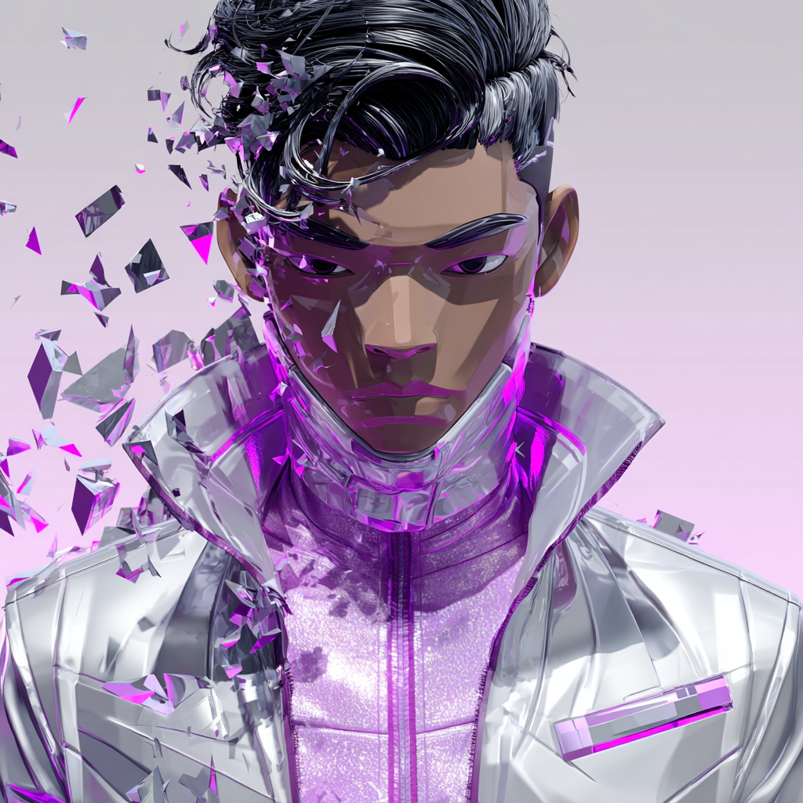

-
01
Voice shapes capital
Allocators read your essays before your memo. Customers read your tweets before your landing page.
-
02
Structure beats willpower
Founders don't have a writing problem. They have a system problem. Cadence collapses without infrastructure.
-
03
Visibility compounds
Earned authority returns interest. The founders who build it now own the conversation in five years.
A REPUTATION STUDIO
/
The invisible machine behind visible leaders.
0%
of founder reputations are accidental, not authored.
0%
of investors evaluate the founder's voice before the deck.
0mo
average for measurable inbound to compound.
Your reputation is your company's
most valuable
asset.
Most founders treat it as an afterthought.
Sprout Social · 2024
0%
Sprout Social × Entrepreneur · 2024
0%
EveryoneSocial · 2024
0%
LinkedIn · 2023
0×
• FRAMING YOUR VISION
HOW RAW THINKING BECOMES CATEGORY AUTHORITY
The Translation Gap
Most founders start here. You have valuable observations and convictions, but no clear, repeatable way to turn them into compelling content. Ideas stay trapped in your head. Posts feel inconsistent or watered-down. You're guessing what will resonate. Every piece takes disproportionate effort and rarely builds real authority.
Core Framing Emerges
We help you build the core framing for your ideas. We deeply extract your clearest observations, hard-earned principles, convictions, and unique perspective. We cut the noise and codify everything into a precise, repeatable system. What felt hard to articulate suddenly becomes structured and ownable. Your voice starts feeling unmistakably yours.
Authority Compounds
Your thinking now has a reliable translation layer and solid core framing. It becomes a stable system that ships consistently across the right platforms and formats for your specific audience. We align your voice with the channels where your audience actually are • so authority builds efficiently over time. You stop grinding on content. The system runs quietly in the background while you stay focused on building.
We are a marketing agency. We are the quiet architecture behind the founders you already follow • the system that turns private conviction into public authority, one signal at a time.
Phantom Post Studio · Vol. IV
Currently working with 11 founders across 3 timezones.
Four phases. One machine.
Built around your voice • operated by ours.
01
PHASE I
Signal Excavation
Six hours. Three sessions. We extract the conviction you've never written down • the contrarian theses, the operator scars, the thoughts you haven't had time to articulate.
- Founder dossier & voice transcript
- Conviction map: 12 root theses
- Audience anatomy & arena selection
02
PHASE II
Voice Architecture
We codify your voice into a system: cadence, vocabulary, taboos, sentence shapes. A style-guide so precise we can write a paragraph and you'd swear you typed it.
- Voice fingerprint & style operating manual
- Editorial calendar (12-week rolling)
- Channel matrix & cadence model
VOICE.WAVEFORM
42.8 Hz
03
PHASE III
Production Engine
Audience attention compounds through rhythm, not bursts. A strong post followed by silence breaks momentum.
We run a steady, predictable shipping cadence tailored to how your ideal audience actually consumes and remembers ideas.
Our team handles the entire production engine • extracting, framing, writing, editing, and distributing • on schedule, with a rapid 24-hour edit loop so you remain the only authentic voice.
04
PHASE IV
Compounding Loop
We don't measure vanity. We measure rooms entered, deals seen, hires recruited. Every quarter we re-score the system and tighten the screws.
- Inbound dashboard & attribution
- Quarterly narrative re-architecture
- Annual reputation audit + roadmap
A full reputation stack • modular, but designed to compound together.
01
FLAGSHIP
Executive Ghostwriting
Long-form essays, thought-pieces, bylined op-eds. We become the keyboard; you remain the mind. Indistinguishable from your own • sharper, sooner.
02
Voice Fingerprint
03
Thread Engineering
Weekly cluster of high-conviction threads built to be screenshotted, not scrolled.
04
SYSTEM
Inbound Engine
We engineer the funnel backwards • from the meeting you want to be in, to the sentence that gets you the call. Attribution, dashboards, quarterly tightening.
05
SYSTEM
Distribution Engine
Foundational content scheduled and distributed across every social surface • everything planned. Nothing last minute. We map the calendar, build the queue, and ship on rhythm so your voice compounds without you touching a keyboard.
06
Narrative Warroom
When the cycle turns and the press shows up • we're already on the call.
07
Ghost Retainer
A senior writer on call. By the hour, no minimum. For founders already operating.
The numbers compound. The rooms change.
Here's what twelve months looks like.
PORTFOLIO MEDIAN · INBOUND VOLUME
↗ +340% / 12 mo
M1M3M6M9M12
↑ 0%
qualified inbound
across 11 active engagements
24hrs
founder time / month
post-onboarding average
They don't write like me. They write as me • only with the discipline I never had. The first essay we shipped opened three LP conversations in a week. Eighteen months in, our pipeline runs on what they publish.

Founder
DeFi Infrastructure · Series B
0%
retention, year one
since studio founding · 2022
"Three months in, a Tier-1 fund cold-emailed us. They quoted my own essay back to me."
• Solo GP · Climate"My LinkedIn used to feel like homework. Now it's where my best customers find me."
• CEO · Vertical SaaS"They held a mirror to my thinking. Then they handed me back a sharper version of myself."
• Operator · Fintech
• TRUSTED BY FOUNDERS AT
SEQUOIA-BACKED·
YC W22·
A16Z PORTFOLIO·
FOUNDERS FUND·
PARADIGM·
USV·
BENCHMARK·
INDEX VENTURES·
·
·
·
·
·
·
·
·
Does our phantom machine
fit your voice?
A 30-minute call. No deck. We listen for conviction, you listen for fit. If we're not the fit, we'll tell you who is.
Book Signal Session